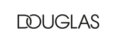
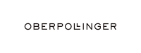
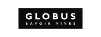
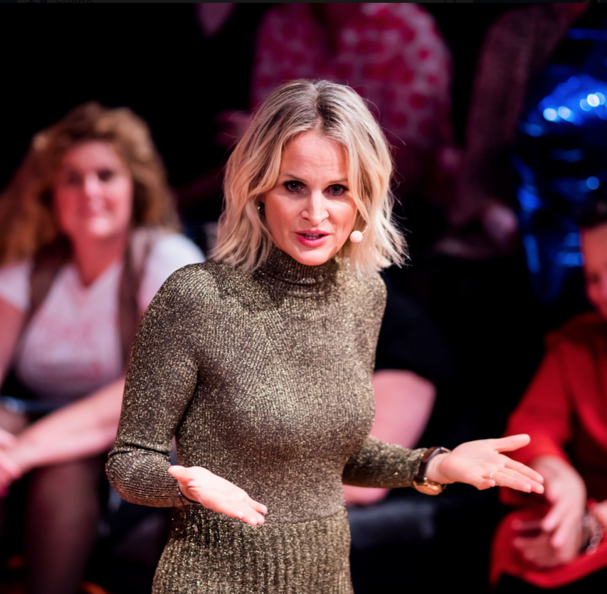

Vortrag & Keynote
Du musst nicht unbedingt alles mögen, was du verkaufst.
Es kommt darauf an, den Verkauf an sich zu lieben!
Buche jetzt Nina Wirtz für einen Vortrag in deinem Unternehmen.
Zu Gast bei



2.000.000
Zuschauer pro Jahr
180.000.000
Euro TV-Umsatz
20
Jahre Verkaufserfahrung

Deutschland ist eine Servicewüste
„Was kann uns denn so eine Homeshopping-Tante erzählen? Eine ganze Menge. Denn sie lässt uns an ihrer Heldenreise teilhaben. Früher war ich eins der Sandkörner in der Servicewüste Deutschland. Ich habe halt meinen Job gemacht, ob der Kunde happy war oder nicht, das war mir ziemlich egal, sagt Nina ehrlich. Und genau das macht ihre herzerfrischende Art aus. Ich durfte Demut und Dienen lernen! Das war ganz schön hart, hat mir aber gezeigt, dass ich mit meiner Arroganz und Profitgier auf dem Holzweg lag. Seit dem bin ich mit dem ganzen Herzen und Leidenschaft dabei. Was sich seit dem geändert hat? Alles! Ihre Beziehungen, privat und beruflich, die Freude am Job und schlußendlich die Umsätze, die mit veränderter Sicht auf die Dinge in die Höhe schossen. Und genau darum geht es in ihren Speeches.“
Verändere dich und deinen Fokus und dein Leben ändert sich diametral!
(Henriette Frädrich, Gastgeberin Geile-Uschi-Kongress)
Das sagen Gäste

Verkauf ist eine Herzensangelegenheit
Ist Ihnen dieses Wissen bereits bekannt, Sie sind aber der Meinung, dass der Prophet im eigenen Haus nichts wert ist? Möchten Sie Ihr Unternehmen mit neuen zeitgemäßen Ideen zum Thema Dienstleistung konfrontieren, um am Markt konkurrenzfähig zu bleiben? Oder wollen Sie als Gastgeber Ihren Gästen einen unvergesslichen Impuls-Event mit neuen, inspirierenden und frischen, manchmal auch polarisierenden Ideen bieten?
Genau da setzt Nina mit ihren kritischen aber immer herzlichen Thesen an. Ihre Keynotes sind gespickt mit kleinen Anekdoten aus dem TV-Geschäft und sie teilt großzügig ihr umfangreiches Know-How zum weitläufigen Themenfeld Dienstleistung, Verkauf und Persönlichkeit. Jahrelange Verkaufs- und Moderationserfahrung kombiniert sie mit einem guten Schuss Persönlichkeitsarbeit, gewürzt mit sprudelnder Energie und Weiblichkeit, dazu als Sahnehäubchen ganz viel Herz und humorvolle Ehrlichkeit!
Jetzt Keynote anfragen!
Herz
Es ist unglaublich wie sich Kundenbeziehungen verändern, wenn du mit offenem Herzen vorgehst.

Veränderung
Wenn du möchtest, dass sich etwas ändert, fang bei dir an.

Fokus
Dein Fokus bestimmt die Richtung deines Lebens - auch im Business!
Kontakt
Rufen Sie direkt an oder nutzen Sie das Kontaktformular
Rufen Sie direkt unter +49 8151 5567400 an oder benutzen Sie das Kontaktformular und wir melden uns innerhalb der nächsten 24 Stunden zurück!